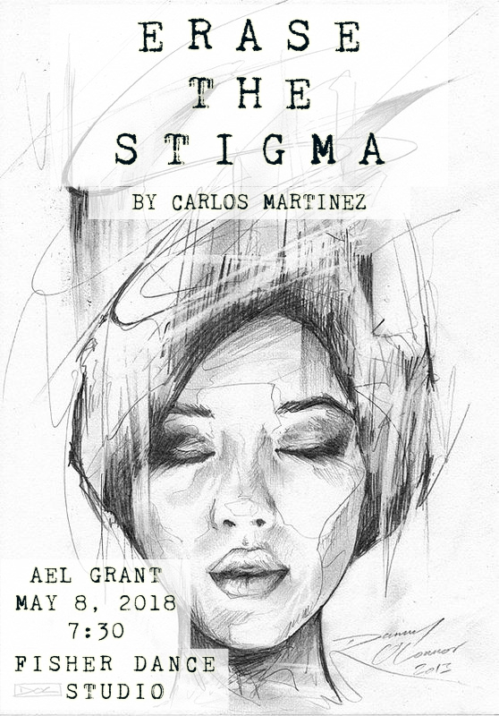
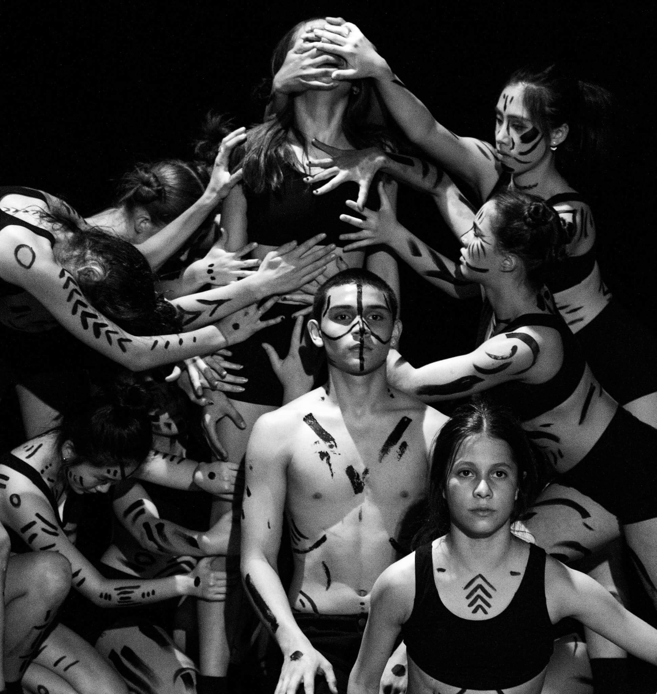

Project 1
AEL Project
Carlos Martinez '18 AEL grant "Erase The Stigma" was about a person with schizophrenia. One of his family members suffers from the disease and Carlos wanted to do a piece reflecting the disorder. I was chosen to be the lead of the show and perform a piece with my fellow dancers. We did the show in May 2018 right after student choreo and was performed at the dance studios.
 